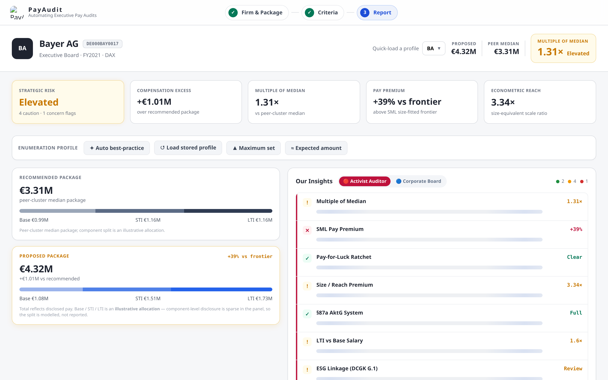
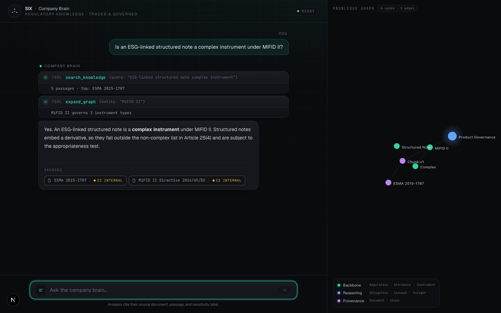

I don't trust an AI's output until I've checked it against something real — a graph, a backtest, a live exploit. This is the record of that habit.
GET IN TOUCHFraunhofer AISEC — testing whether LLMs can be trusted to flag security-relevant code via Code Property Graphs.
Hackathon-tested systems: exec-comp anomaly detection, graph-based knowledge retrieval, on-device elder-care sensing.
Found and responsibly disclosed a live authorization exploit — confirmed end-to-end, not just in source.

Flags excessive executive pay from unstructured disclosures. Backtested against real shareholder revolts at Bayer, Continental, Software AG — 129 real companies, live on ORBIS data.
GET /api/user/8271/profile
Authorization: Bearer <token>
<- 200 OK { "user_id": 8271, ... }
GET /api/user/8272/profile
Authorization: Bearer <same token>
<- 200 OK { "user_id": 8272, ... } ← should be 403
Live-exploited IDOR in a public repo, verified against the running app, disclosed through the right channel same-day.

A second brain so a long-tenure employee's knowledge doesn't walk out the door on retirement. Graph retrieval over vector-only RAG.
On-device signal processing for elder-care monitoring. Continued past StartHack Hong Kong into real customer discovery.